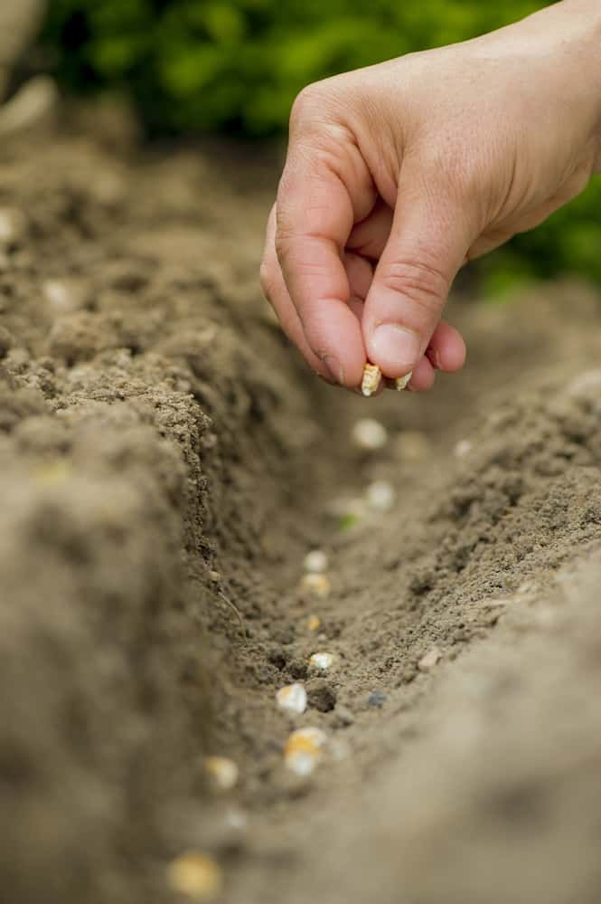
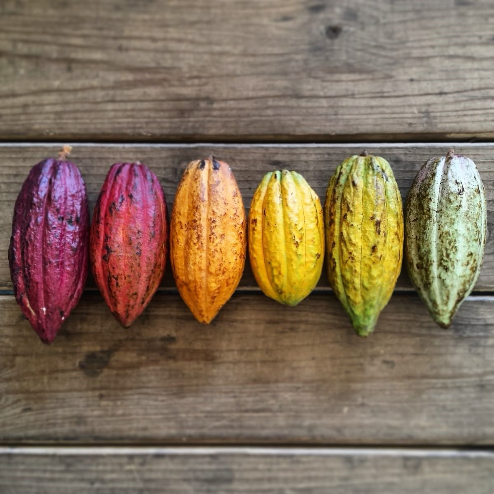
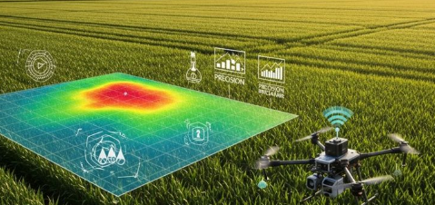
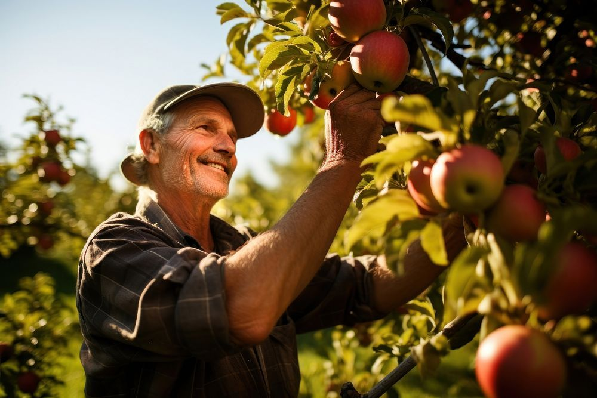

Detalles Técnicos
Módulos de Ingeniería
Arquitectura del Sistema
El sistema está compuesto por tres módulos principales: el sistema de movilidad, el sistema de almacenamiento y dispensación de semillas, y el sistema de control.
Permite el desplazamiento en terrenos variados, la dispensación mediante un mecanismo tipo garra y la navegación por coordenadas exactas.
Especificaciones Técnicas
Componentes principales integrados para el funcionamiento automatizado del prototipo agrícola de precisión.
- Microcontrolador Arduino
- Motores DC y controlador
- Sensores de navegación y GPS
- Sistema mecánico tipo garra





